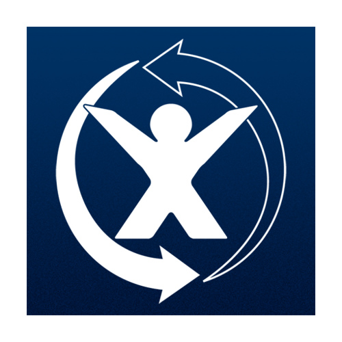
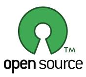
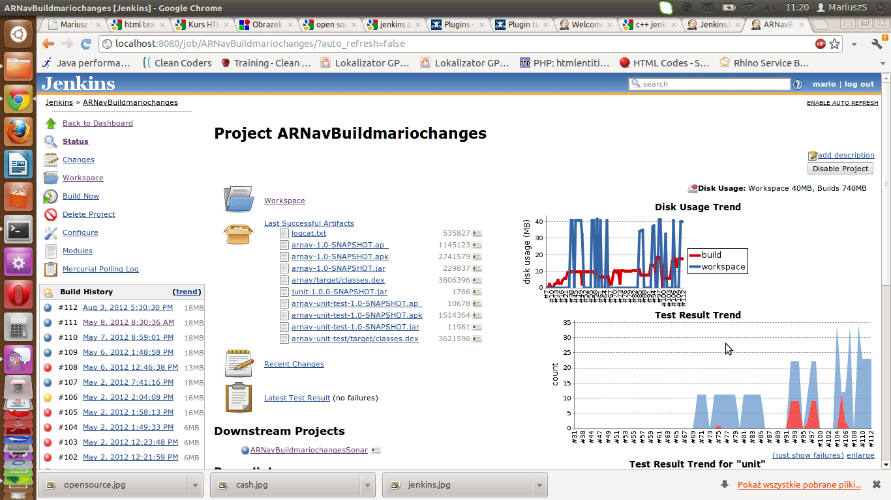

głównie jednak negatywnym
Continuous Integration
Jeśli chcesz, żeby twój projekt był zdrowy – używaj CI
Niestety jeszcze w niektórych firmach programiści i managerowie uznają, że CI to strata czasu – najczęściej wtedy projekt umiera.
Jeśli chcesz, żeby twój projekt był zdrowy – używaj CI
Continuous Integration w Android*
Mobica Limited
Mariusz Saramak
Po co jest CI ?
- Czy komuś zdażyło się nie skomitować pliku
- Czy zdarzył się, że projekt budował się tylko u was/ u kolegi
- Czy szef chciał zbudowany build za 5 min ?
- Czy za każdym razem uruchamiasz testy ? analize statyczną kodu ?
to zbiór narzędzi do ciągłego i nieustannego tworzenia programu
Narzędzia do wyboru
- Bamboo- Atlassian - koszt od 120$ -1800$
- Jenkins 0$
- QuickBuild ( free version )
Zalety jenkins
- Bezpłatny
- open-source
- duża ilość pluginów
Pluginy
- 583 pluginy
- do ściągania źródeł z cvs, svn, git, perforca, mercuriala i innych, do integracji z jirą i mantisem
- dla języków: java, c++, php, delphi, c#
- jakość kodu: findbugs, PMD, checkstyle, sonar
- testy - raportowanie


Narzędzie do statyczniej analizy kodu
połączenie findbug-a, PMD i checkstyle + time machine
- Ponad 500 regół do sprawdzenia
- wykrywa śmieszne błędy
- sprawdza czy idzie nam coraz lepiej
- nie jest wyrocznią
Dziękuje za uwagę